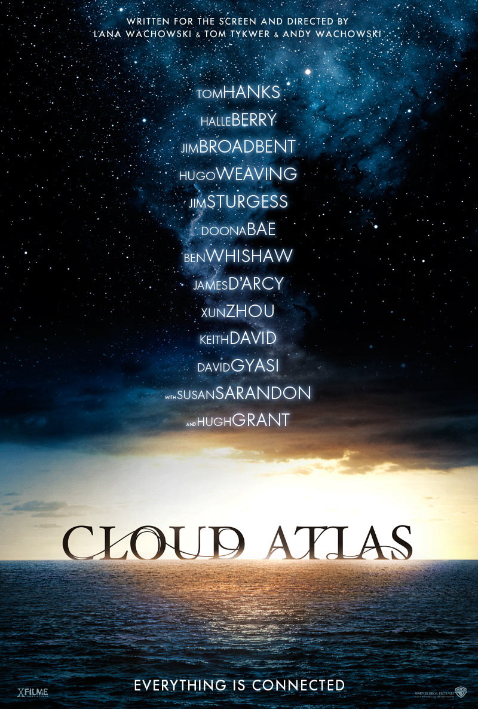
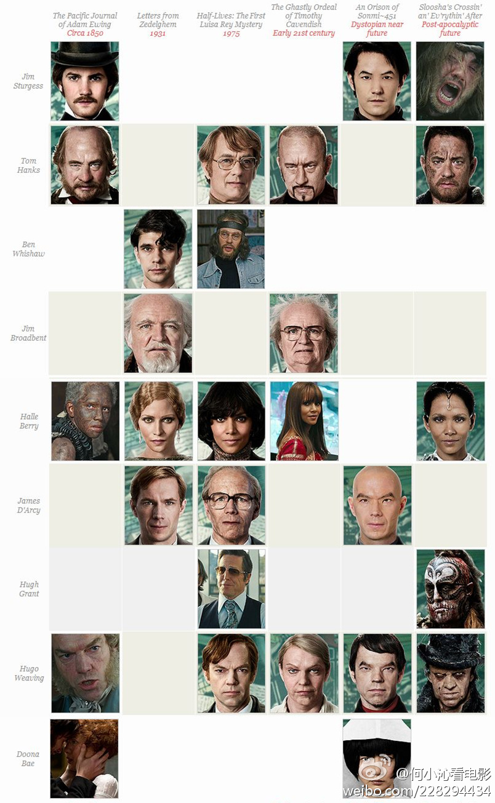

云图：脸盲症的�音
本文的全页�版本：http://multiverse.lamost.org/blog/cloud-atlas
本文å‰�å�Šéƒ¨åˆ†æ— 剧é€�，å�¯ä½œä¸ºç”µå½±è§‚看å‰�é¢„ä¹ æ��料。
最近看了一部ç¥�奇的电影，电影讲了一个å…é�“è½®å›�的故事，å�Œä¸€ä¸ªæ¼”员饰演多角色，而且化妆师们的技术真是出ç¥�入化啊，男男女女傻傻分ä¸�清楚，总是使人在ä¸�å�Œçš„时代，ä¸�å�Œçš„故事ä¸æ··ä¹±æ¸¸èµ°ã€‚估计这是导演故æ„�安æ�’çš„ï¼Œå› ä¸ºæ•…äº‹å�Ÿæœ¬å°±æ˜¯æƒ³è¦�告诉我们：Everything is connected. å�Œæ—¶ï¼Œä¼°è®¡è¿™éƒ¨ç‰‡å�会åƒ�黑客å¸�å›½é‚£æ ·æˆ�为 cult 片å�§ã€‚ä¸�过，作为脸盲症患者，å†�有人鄙视我，我就跟他/她说，咱们å�»çœ‹äº‘图å�§ã€‚
云图(Cloud Atlas)（云图电影介ç»�†） 是由 Tom Tykwer，Lana Wachowski å’Œ [Andy Wachowski](Andy Wachowski) 执导，并且众星云集的一部电影。 å…¶å�Ÿè‘— Cloud Atlas（ä¸è¯‘本《云图》）作者是é��常有å�Ÿåˆ›æ€§çš„è‘—å��å°�说家 David Mitchell。
但是第一次看这部电影时很难把所有的故事都ç�†æ¸…æ¥šï¼Œå› ä¸ºç›¸å�Œçš„演员饰演了很多ä¸�å�Œçš„角色，而且å…个故事穿æ�’进行，所以如æ�œã€Œç¼“å˜ã€�å°�了，就容易æ¼�æ�‰ç»†èŠ‚。所以我打算把主è¦�的演员和他们在ä¸�å�Œçš„时候饰演的角色列出æ�¥ï¼Œè¿™æ ·å�»çœ‹ç”µå½±çš„时候就ä¸�容易混淆了。（å�‚考这篇 Jennifer Vineyard æ‰€å†™çš„æ–‡ç« Your Guide to the Characters and Connections of Cloud Atlas， wikipedia 相关è¯�æ�¡ä»¥å�Šå®˜ç½‘（强烈建议æ˜�å¹´å�»ç”µå½±é™¢çœ‹ç”µå½±ä¹‹å‰�å�»å®˜ç½‘看看首页的时间线和角色海报……）。）
演员
主�演员（链�是豆瓣）有

- 周迅
- Tom Hanks
- Jim Sturgess
- Ben Whishaw
- Halle Berry
- Jim Broadbent
- Doona Bae
- Hugh Grant
- Hugo Weaving
- Keith David
- James D’arcy
故事å…é‡�å¥�
Cloud Atlas ä¸å…±æœ‰å…个故事。
- 1849 年，一艘太平洋上的船
- 1936 年，Edinburgh 一ä½�作曲家的家ä¸
- 1973 年，San Francisco çš„ä¸€åº§æ ¸ç”µç«™é™„è¿‘
- 2012 年，Edinburgh 的一个奇异的养护ä¸å¿ƒå’Œ London
- 2144 年，Neo-Seoul，未æ�¥éŸ©å›½çš„ Seoul？（没è§�过æ£å¼�的英文å—æ¯�，猜测如æ¤æ‹¼å†™ï¼‰
- 2321 年，Hawaii 的一个山谷，和山谷附近的山上
å…é�“è½®å›�
下表å�–自 wikipedia Cloud Atlas è¯�æ�¡ï¼Œç¨�ä½œç¿»è¯‘å¹¶æ·»åŠ è±†ç“£é“¾æ�¥ã€‚
| 演员 | Adam Ewing 的太平洋日记 (1849) | Zedelghem çš„æ�¥ä¿¡ (1936) | å�Šè¡°æœŸï¼šLuisa Rey 的第一个谜团 (1973) | Timothy Cavendish 的苦难ç»�å�† (2012) | Sonmi~451 的祈祷 (2144) | “Sloosha’s Crossin’ an’ Ev’rythin’ After” (2321) |
|---|---|---|---|---|---|---|
| 豆†| Dr. Henry Goose | Hotel Manager | Isaac Sachs | Dermot Hoggins | Cavendish Look-a-like Actor | Zachry |
| 豆†| Native Woman | Jocasta Ayrs | Luisa Rey | Indian Party Guest | Ovid | Meronym |
| 豆†| Captain Molyneux | Vyvyan Ayrs | æ— | Timothy Cavendish | Korean Musician | Prescient 2 |
| 豆†| Haskell Moore | Tadeusz Kesselring | Bill Smoke | Nurse Noakes | Boardman Mephi | Old Georgie |
| 豆†| Adam Ewing | Poor Hotel Guest | Megan’s Dad | Highlander | Hae-Joo Chang | Adam/Zachry’s Brother in Law |
| 豆†| Tilda Ewing | æ— | Megan’s Mom, Mexican Woman | æ— | Sonmi~451, Sonmi~351, Sonmi Prostitute | æ— |
| 豆†| Cabin Boy | Robert Frobisher | Store Clerk | Georgette | {{N/A}} | Tribesman |
| 豆†| æ— | Young Rufus Sixsmith | Old Rufus Sixsmith | Nurse James | Archivist | æ— |
| 豆†| æ— | æ— | Talbot/Hotel Manager | æ— | Yoona~939 | Rose |
| 豆†| Kupaka | æ— | Napier | æ— | An-Kor Apis | Prescient |
| 豆†| Autua | æ— | Lester Rey | æ— | æ— | Duophysite |
| 豆†| Madame Horrox | æ— | æ— | Older Ursula | Yosouf Suleiman | Abbess |
| 豆†| Reverend Giles Horrox | Hotel Heavy | Lloyd Hooks | Denholme Cavendish | Seer Rhee | Kona Chief |
�豆瓣电影「盗��的一幅图把这些人都放进�了，�以跟上表对应�看。

ä»�æ°´å�°å’Œä¸Šä¼ 者æ�¥çœ‹ï¼Œåº”该是何å°�æ²�的。（ä¸æ–‡ç‰ˆåœ¨æ¤ï¼‰
图册
把本文用到没用到的图片都列在下方：

å¤�ä¹
看完电影之å��，在看官网 everything is connected sextet é‚£å¼ å›¾ï¼ˆå¤§å›¾åœ¨æ¤ï¼‰ï¼Œæœ‰ã€Œéš�è—�剧情ã€�（(电影ä¸ä¹Ÿå‡ºç�°äº†è¿™ä¸ªæ¶‚鸦](http://www.douban.com/photos/photo/1441012471/)）。
ç”案在æ¤ï¼šhttp://www.douban.com/photos/photo/1440991190/ （为防æ¢å›¾ç‰‡å�˜å�‰ï¼Œè¿˜æœ‰ä¸€ä¸ªå¤‡ä»½åœ¨æ¤ ）
FAQ
有关键情节��
Q: 找�到的 �一� The Pacific Journal of Adam Ewing 在哪里？
A: 在大约一å°�时四å��分钟å��，è€�作曲家被æ�€çš„时候，å�‘ç�°è¿™æœ¬ Journal 被用æ�¥å�«æ¡Œå�底了。

{kind=link}
{kind=link}
{kind=link}
{kind=link}
{kind=link}
{kind=link}
{kind=link}
{kind=link}
{kind=link}
{kind=link}
{kind=link}
{kind=link}
{kind=link}
{kind=link}
{kind=link}
{kind=link}
{kind=link}
{kind=link}
{kind=link}
{kind=link}
{kind=link}
{kind=link}
{kind=link}
{kind=link}
{kind=link}
{kind=link}
{kind=link}
{kind=link}
改版了。。好久没æ�¥äº†ï¼Œé£�æ ¼ä¾�然很喜欢哈哈
这次已ç»�懒得自己改了，基本ä¿�æŒ�了主题的å�Ÿæ ·å•Š~
é¢œè‰²å‘€ï¼Œç´ ç‚¹å¥½
：）